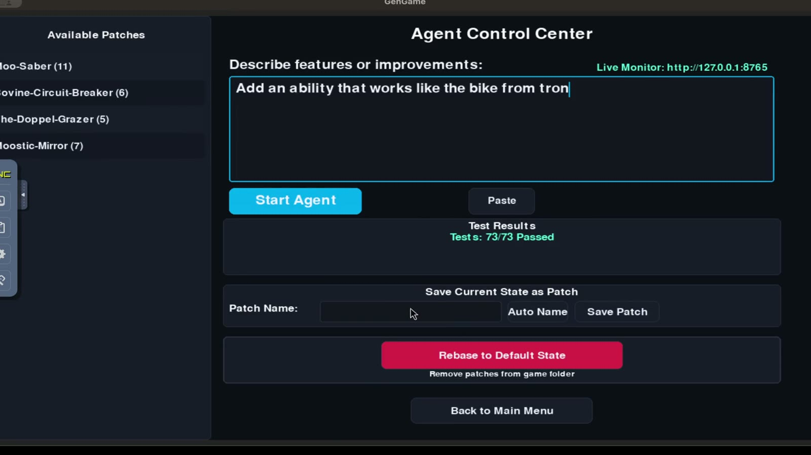
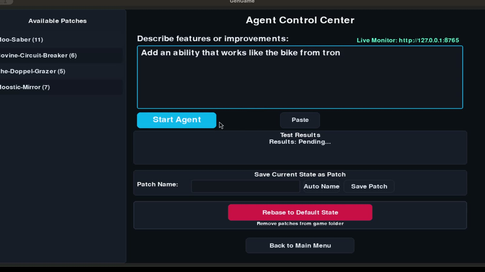
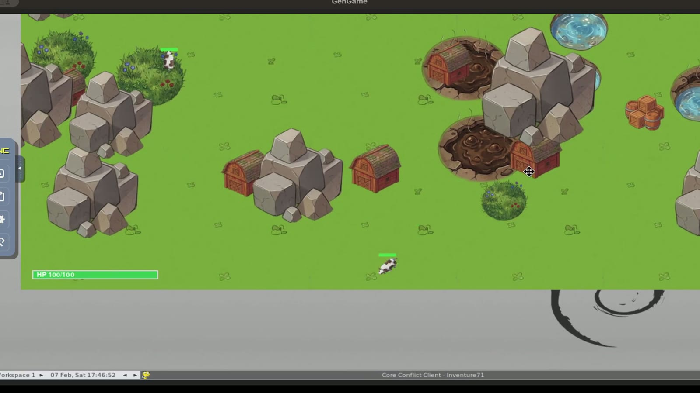

Core Conflict
A self-evolving multiplayer game engine where AI agents diagnose issues, suggest mechanics, and write real-time code patches.

Demo video
Core Conflict in motion
Core Pillars
The Engine of Evolution
-
Adaptive runtime modules
Core Conflict agents monitor game logs and performance, generating and applying code patches to the live environment without restarts.
-
Modular Architecture
Every game mechanic, character ability, and UI element is a decoupled module, allowing the AI to modify specific components without touching unrelated systems.
-
Decentralized Sync
Integrated
Merge3logic ensures that code patches generated on the server are merged and executed identically across all clients.
Beyond Fixed Mechanics
Traditionally, game rules are set in stone at launch. Core Conflict turns the "developer loop" into a "runtime loop," where the game itself acts as the developer, tester, and deployer.
The Evolution Cycle
How a Patch is Born
Diagnosis
The monitoring agent detects an imbalance or a bug in a specific character ability module.
Generation
An LLM agent writes a Python patch, tested against a simulated sandbox environment.
Synchronization
The patch is broadcast to all clients; Merge3 applies the changes to
their local runtime modules.
Hot-Reload
The game engine re-imports the modified module, updating mechanics for all players mid-session.
Runtime Evidence
From Game State to Agent Loop

